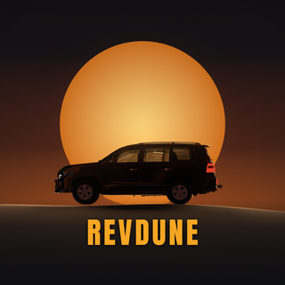
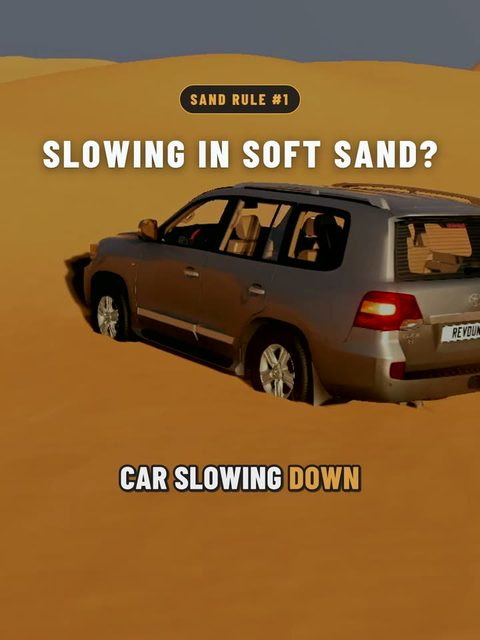
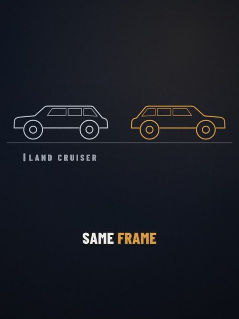
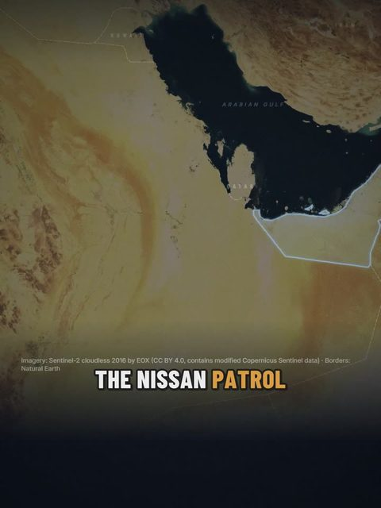
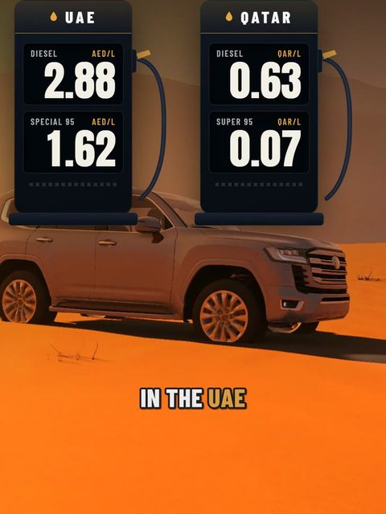
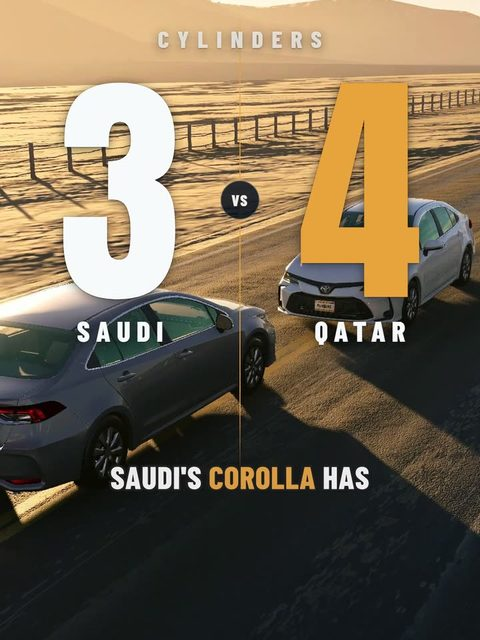
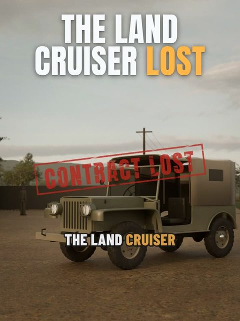
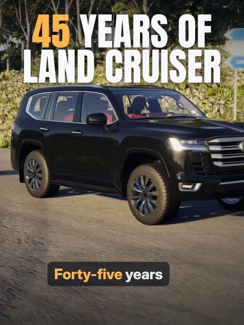

revdune
YouTube7 full videos
RevDune
Land Cruiser, Camry & Corolla stories from Qatar · made in Blender + BeamNG.drive
Tap a Short to watch its full video.

SANDSlowing down in soft sand? Don't floor it. Watch the full video: Sand Driving Explained: Why Your Land Cruiser Gets Stuck (and How to Get Out)
LEXUSPress one button and the Lexus stands up 76 mm taller. Watch the full video: Lexus LX570 vs Land Cruiser 200: What Does the Extra Money Buy?
PATROLPatrol or Land Cruiser? Each one rules its own country.. Watch the full video: Land Cruiser vs Patrol: The Gulf's Biggest Rivalry
DIESELIn the UAE, the diesel costs more. In Qatar, it costs less.. Watch the full video: Diesel vs Petrol Land Cruiser: The Gulf Fuel Maths Nobody Shows You
COROLLASaudi's Corolla has 3 cylinders. Qatar's has 4.. Watch the full video: Every Corolla generation: which one is actually worth buying?
LCThe Land Cruiser started as a truck that LOST. Watch the full video: 5,000 km in my Land Cruiser: the story of the car the Gulf loves
LCEvery Land Cruiser since 1980, in 50 seconds. Watch the full video: 5,000 km in my Land Cruiser: the story of the car the Gulf loves